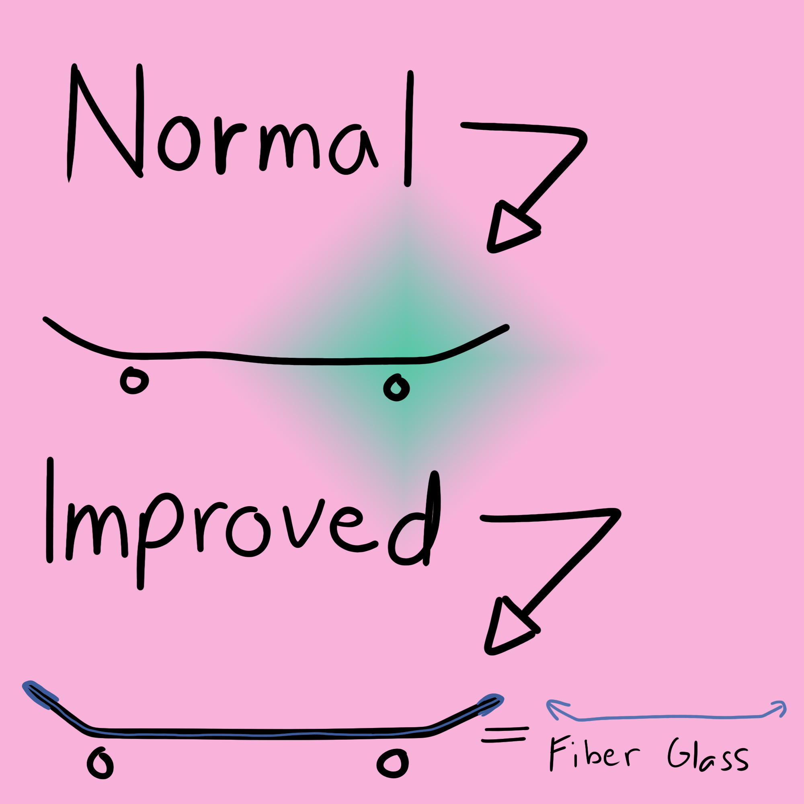

Fiber glass infused skateboard deck
As we all know, skateboards are made with wood, maple wood to be exact
and it is still used up until today. There's already a deck that has been
infused with fiber glass but it's only one ply and a deck normally has a 7 to 8 plies
of wood. My vision is to improve that and make the fiber glass ply to be distributed to
the main contact points of the board.
Head over to the next page for the next improvement that I want to pursue.
